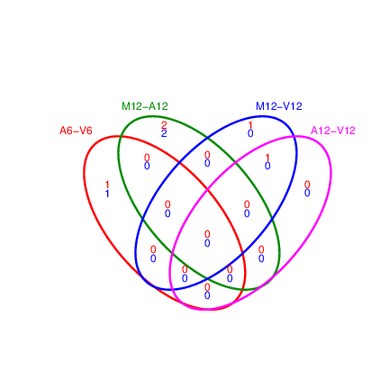

The analysis of differentially expressed genes (DEGs) is performed with
the glm method of the edgeR package (Robinson et al., 2010). The sample
comparisons used by this analysis are defined in the header lines of the
targets.txt file starting with <CMP>.
Run edgeR
library(edgeR)
countDF <- read.delim("results/countDFeByg.xls", row.names=1, check.names=FALSE)
targets <- read.delim("targets.txt", comment="#")
cmp <- readComp(file="targets.txt", format="matrix", delim="-")
edgeDF <- run_edgeR(countDF=countDF, targets=targets, cmp=cmp[[1]], independent=FALSE, mdsplot="")Add gene descriptions
library("biomaRt")
m <- useMart("plants_mart", dataset="athaliana_eg_gene", host="plants.ensembl.org")
desc <- getBM(attributes=c("tair_locus", "description"), mart=m)
desc <- desc[!duplicated(desc[,1]),]
descv <- as.character(desc[,2]); names(descv) <- as.character(desc[,1])
edgeDF <- data.frame(edgeDF, Desc=descv[rownames(edgeDF)], check.names=FALSE)
write.table(edgeDF, "./results/edgeRglm_allcomp.xls", quote=FALSE, sep="\t", col.names = NA)Plot DEG results
Filter and plot DEG results for up and down regulated genes. The
definition of up and down is given in the corresponding help
file. To open it, type ?filterDEGs in the R console.
edgeDF <- read.delim("results/edgeRglm_allcomp.xls", row.names=1, check.names=FALSE)
png("./results/DEGcounts.png", height=10, width=10, units="in", res=72)
DEG_list <- filterDEGs(degDF=edgeDF, filter=c(Fold=2, FDR=20))
dev.off()
write.table(DEG_list$Summary, "./results/DEGcounts.xls", quote=FALSE, sep="\t", row.names=FALSE)
Venn diagrams of DEG sets
The overLapper function can compute Venn intersects for large numbers of sample
sets (up to 20 or more) and plots 2-5 way Venn diagrams. A useful
feature is the possiblity to combine the counts from several Venn
comparisons with the same number of sample sets in a single Venn diagram
(here for 4 up and down DEG sets).
vennsetup <- overLapper(DEG_list$Up[6:9], type="vennsets")
vennsetdown <- overLapper(DEG_list$Down[6:9], type="vennsets")
pdf("results/vennplot.png")
vennPlot(list(vennsetup, vennsetdown), mymain="", mysub="", colmode=2, ccol=c("blue", "red"))
dev.off()